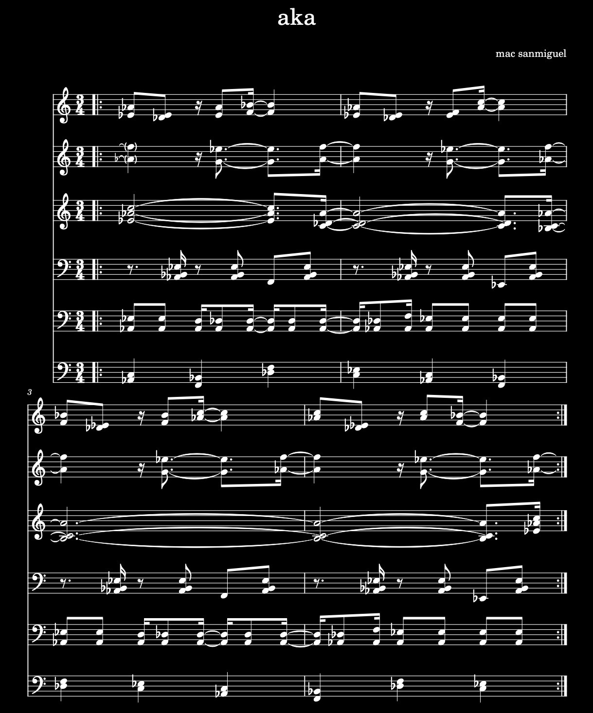

this is a small collection of piano chorales and etudes i have written.

aka is a piano etude based on the music of the Aka people who live in the rainforest of the congo basin.
the etude is an adaption of the song "song of rejoicing after returning from the hunt"
from the unesco collection - an anthology of african music: ba-benzele pygmies